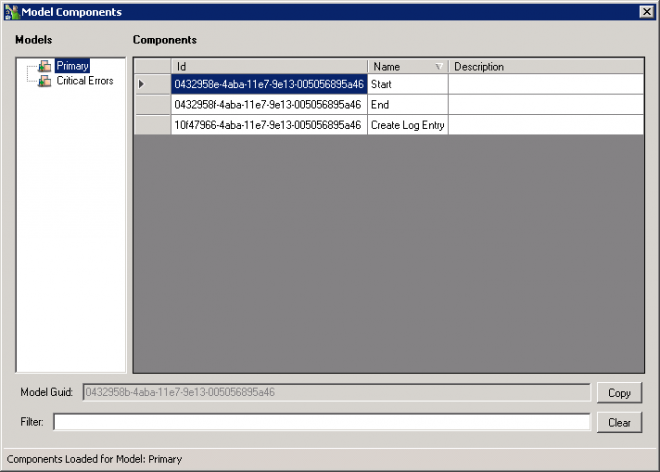

Model Info
The Model Info plugin displays a list of all Models within the current Project. When you select a given Model a list of Components are displayed, showing their Id, Name and Description.
You can then Filter on a given Field.
This allows you to search for a Guid that maybe in Logs you are diagnosing.
Plugin Icon

Author
 Protirus (Alex Hedley)
Perform Action
A Form opens which lists all the Models in the project and selecting a model displays a list of Components (with Guids) to search on.

Alternative
See Article by Sam
Workflow - Finding a model name using the model GUID
https://www.symantec.com/connect/articles/workflow-finding-model-name-using-model-guid
Location
[Install Drive]:\Program Files\Symantec\Workflow\Designer\Plugins\
DLL
- Protirus.Workflow.Plugins.dll
Code
N/A
Customise
Can be hidden with a config change in the Protirus.Workflow.Plugins.xml file.
Documentation
[Display any related Documentation]
- Title URL
- Chapter/Page #
Support
[Display any related Support Documents]
- Title
- URL